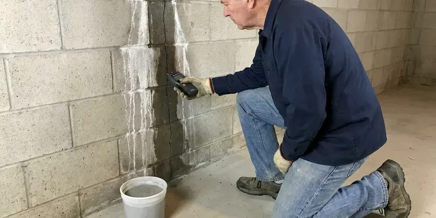

Drainage Services in Providence, RI
Need water to go where it belongs? We clear, repair and install drainage systems for homes in Providence, RI and test them before we leave.
- Skilled Technicians
- Work Guaranteed
- Licensed Plumbers
- Written Pricing
Fix the Clog or the Soggy Yard for Good in Providence, RI.
Tough drain problems are our daily work, including root-filled sewers.
Licensed Drainage Plumbers in Providence, RI
JPN Plumbing handles drainage work throughout Providence, RI, from a kitchen sink that drains slowly to a backyard that floods every storm. Indoor lines get cleared and checked with a camera. Outside is different. In the yard, we study where roof water lands and which way the ground slopes before suggesting any drain.
Our expertise includes:
- Snaking, jetting and camera work on indoor drains
- Drain cleaning and clog clearing
- Downspout tie-ins, dry wells and grading fixes near foundations

Additional Plumbing Maintenance Services in Providence, RI
Our maintenance and specialty plumbing services in Providence, RI catch small problems before they become emergencies.


Customers
Why Choose JPN Plumbing for Drainage Services in Providence, RI?
Every drain job ends with a flow test. We run water through the line for several minutes after clearing it. On yard systems, we run a hose into the catch basins and watch the outlet, because a French drain that looks fine on paper can still hold water if the outlet end sits too high.
- Advanced Tools, Our trucks carry camera and jetting equipment to find and clear the problem.
- Licensed & Insured, All of our plumbers are licensed and insured.
- Indoor and Outdoor, We handle everything from a sink clog to a yard drain system.
Citywide Coverage
We cover every neighborhood in Providence and the nearby communities for drain and yard drainage work. There is no extra trip fee. Pricing and equipment are the same across our service area.
Experienced Team
Each JPN Plumbing plumber is licensed and trained on jetting and camera equipment. We keep training. Jetting old cast iron or thin-wall clay takes judgment, because the wrong nozzle or too much pressure can do damage, so our technicians camera the pipe first and adjust the setup to what they see.
Safety-First Approach
Our technicians wear eye protection and gloves on every job. Sewage carries bacteria. We use drop cloths, clean the area around any fixture we work on, and disinfect hard surfaces where sewage came up so your floor is safe to walk on when we leave.
Trusted Certified Providence Plumbing Services Professionals
At JPN Plumbing, we take pride in licensed, certified plumbing services throughout Providence, RI. Those papers on the wall mean something. Every repair, install and maintenance visit follows strict safety and quality rules, and the plumbers doing the work carry recognized industry credentials.
Call Us Now PHCC Plumbing Contractor Recognition
PHCC Plumbing Contractor Recognition Better Business Bureau (BBB) Accreditation
Better Business Bureau (BBB) Accreditation Angi Certified Pro
Angi Certified Pro ISO 9001 Quality Management Certification
ISO 9001 Quality Management CertificationIndoor and Outdoor Drainage in Providence, RI
Main Line and Sewer Drainage in Providence, RI
Water coming up in the tub when the washer drains is a classic main line symptom. Backups show up first at the lowest drain. We clear the line through the cleanout, camera it, and if roots or a belly caused it, show you where and how deep it is so you can decide between maintenance and repair.

Emergency Drain Clog Removal in Providence, RI
An overflowing toilet or a backed-up shower is a health issue as much as a plumbing one. Sewage carries bacteria. After clearing it, we figure out if it was one fixture or the main and disinfect the floor.
Hydro Jet Line Cleaning in Providence
Jetting uses water at high pressure to strip a pipe back to its original diameter. Private wells serve many rural homes, and owners around Providence benefit from testing for acidity, iron and other common concerns. Mineral scale and grease build up on pipe walls over years and catch everything that goes down the drain, so a cleaned pipe stays clear much longer than one that was only cabled. Plan on about two hours.
Commercial Drainage Solutions in Providence
Businesses in Providence can lose a day of sales to one backed-up floor drain. Floor drains, grease lines and lot catch basins get serviced before or after business hours. Jetting on a schedule prevents most emergencies.
Fixture Drain Clearing in Providence
Kitchen sinks clogged with grease and bathroom drains slowed by hair make up most of our fixture calls. We pull the trap when we can. Toilets get a closet auger, and if that fails, we pull the toilet and clear it from the flange.
French Drain Installation in Providence
A French drain is a gravel-filled trench with perforated pipe that collects groundwater and carries it away. Filter fabric around the stone keeps silt out. The pipe needs at least a 1 percent slope to a daylight outlet, a dry well or a sump, and the outlet end needs a grate so animals do not nest in it.
Sewer Line Repair and Replacement in Providence, RI
Sewer laterals fail from roots, settling, or plain age. Clay and cast iron lines from older homes crack at the joints, and roots find those cracks within a few seasons. After a camera inspection, we locate the damage and price spot repair, replacement or lining. You pick.

Commercial Drainage Services in Providence
Retail centers and office buildings need floor drains, roof drains and parking lot catch basins that keep working. We set up service schedules for property managers. Silted basins can flood a lot and the suites next to it, so we clean and jet them ahead of the wet season.
Drainage Help Near Me in Providence, RI
Searching for drainage services near me in Providence, RI tends to happen when water is already somewhere it should not be. We keep trucks nearby. That lets us clear a backed-up main the same day in most cases, and come back for a yard drainage site visit after the next rain so we can see exactly where the water runs.
Local experience counts in drainage work because slope and soil change from block to block. Some soil barely drains. A dry well that works on sandy ground across town may fill and overflow on heavy clay, so we check how the soil drains on your lot before recommending a dry well over a daylight outlet.
JPN Plumbing at a Glance
- Fully licensed plumbing team covering Providence, RI
- Same-day appointments and 24/7 emergency response
- Upfront, flat-rate pricing before work begins
- 4.8-star rated by 684+ Rhode Island customers
Providence Map
Providence Information
- Population
- 190,792
- Area codes
- 401/833/508
- Service area
- Providence and communities within 40 miles
- Nearby
- East Providence, Pawtucket, Central Falls, Cranston
Homes in Providence, RI need drains that keep up indoors and out. We clear clogged lines and route yard water away from the house.
Expert Services
Call JPN Plumbing for reliable plumbing work done by licensed pros in Providence, RI.
Our Specialized Plumbing Services in Providence, RI
At JPN Plumbing, you get every kind of plumbing service from one company across Providence, RI. We go from leak detection all the way to full system installations, for homes and commercial buildings, and we do it quickly at a fair price. Here are the core services we offer:


The Drainage Process in Providence, RI
We keep it straightforward: diagnose, explain the options and install a fix built to last.
Request a Quote
Call (401) 364-2507 and describe the drain problem. We set a time that works.
Diagnosis & Plan
Our technician inspects the line, often with a camera. You get the options and a price.
Clear or Repair
Once you approve, we clear or repair the line with the right tools.
Frequently Asked Questions About Drainage Services in Providence
Drain clearing in Providence usually runs $125 to $500 depending on the line, and hydro jetting runs $350 to $800. Yard drains cost more. French drain and downspout jobs usually land between $2,000 and $8,000, based on length and hardscape.
Clearing a clog does not need a permit. Pipe repairs often require one. Sewer section replacements and new cleanouts generally need a permit, which we handle.
Slow sinks and gurgling drains are the early signs. A sewer smell in the yard or basement comes next. Outside, look for water that stands more than a day after rain, soggy spots along the foundation, or mulch and soil washed onto the walk, all of which mean water is not leaving the yard the way it should.
Our cable machines come from Spartan Tool and RIDGID, and our cameras are RIDGID SeeSnake units with built-in locators. Jetters are trailer or cart units. Good equipment matters because a camera with a locator tells us exactly where and how deep a problem is, which keeps a sewer repair to one small excavation instead of a long trench.
Simple downspout extensions are a reasonable DIY project. Trench drains take more skill. They need proper slope and a legal outlet, and digging without an 811 locate is risky.
Yes, sewer line repairs and replacements in Providence, RI usually require a plumbing permit and an inspection. Clearing a clog needs no permit. We handle the permit and locates, and the inspector sees the pipe before we backfill.
Drain cleaning usually means a cable machine with a cutting head that bores through the clog. It is quick and cheap. Jetting scours the full pipe wall, lasting longer, but it costs more and needs sound pipe.
We advise against it. Chemical cleaners can damage older pipe and metal traps. They also rarely clear a full blockage, and when they fail, the plumber has to work around a trap full of caustic liquid that can burn skin and eyes, which slows the job and raises the risk.
Hear From Customers Who Hired Our Plumbing Experts

Lisa C.
Water was pouring out from under the washing machine on a holiday weekend. JPN Plumbing talked me through closing the valves over the phone and had a plumber at the house within ninety minutes. It was a burst fill hose.
Emergency Plumbing · East Providence, RI
Monica A.
Our water bill nearly doubled in one month with no change in how we used water. The tech checked the meter, heard the leak under the hallway with his equipment, and opened a hole about a foot square. Fixed the same day.
Slab Leak Repair · Pawtucket, RI
Mark T.
The floor drain in our office break room backed up every few weeks. The plumber ran a cable, then put a camera down and found roots at a joint about thirty feet out. Seeing it on the screen made the decision easy.
Drain Cleaning · Providence, RILaura S.
Our 40 gallon tank started leaking from the bottom after thirteen years. The tech hauled the old one out, set a new unit with a fresh expansion tank, and had hot water running in about four hours. He took the old tank with him too.
Water Heater Replacement · Central Falls, RI
Angela D.
Our sump pump quit during a storm and the water was an inch from the basement carpet. JPN Plumbing put in a new pump with a battery backup that same evening. We have had two heavy rains since. It kicked on both times.
Sump Pump · Greenville, RIJessica T.
We were adding a gas range in a kitchen remodel and needed a new line run from the meter. The plumber pulled the permit, ran the pipe through the crawl space, and had it inspected and approved within the week.
Gas Line Repair · East Providence, RI